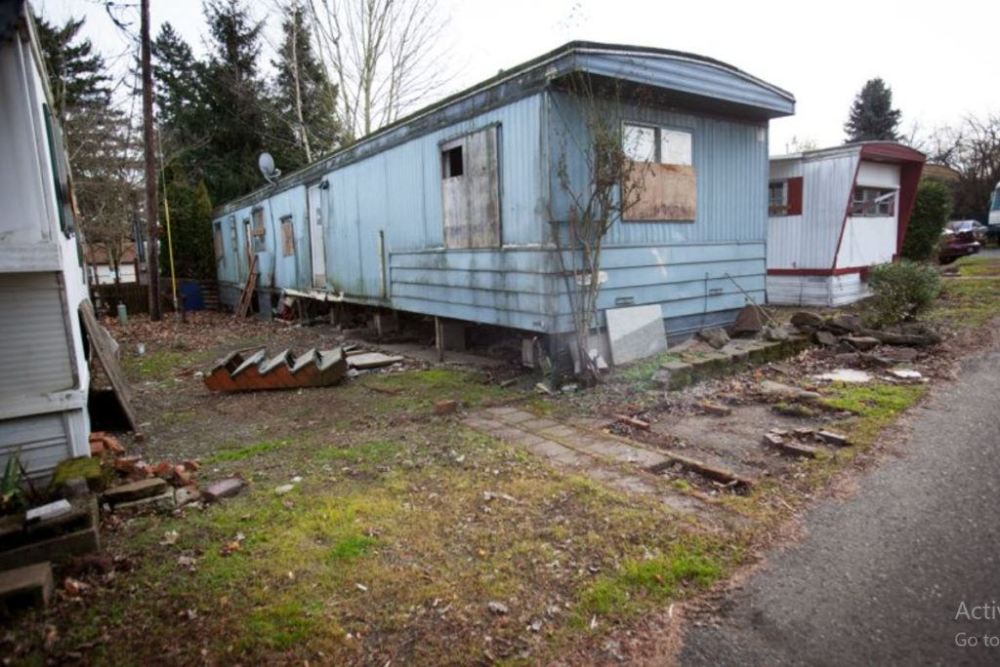

This article is part of my enormous Prayer Affirmation Campaigns series. If you are unfamiliar with this series, I recommend that after you read this, you go to the start of the series and start reading. This idea of prayers as part of a campaign are quite different than anything else you will find anywhere else.
I have written a bunch of articles on the MWI, world-lines and how you can navigate them. I have placed all this within the context that if you can navigate your reality, then you can sculpt the life that you will live. And it’s a pretty great topic. Many people need to do this right now in their lives.
There are all sorts of side topics associated with this. Some dealing with history, some with the mechanisms behind it all. Some with the mysteries that we are confronted with, and some just tangentially. For instance, how government (especially in the West) are crating false narratives to “bend reality” to fit their idea of a utopia.
What I haven’t gotten into is some of the many other “skills” and “abilities” that one can use to help you in your world-line navigation. To many, these skills or abilities seem far-fetched, science fiction, or just new-age mumbo-jumbo.
But they are not.
In this article we will discuss “channels”. It is a technique of tapping into the endless streams of quanta, frequencies, actions (both physical and non-physical) to derive some information from it. Information that you can use in your life.
The untrained call this ability to tap into channels as… [1] Woman’s Intuition (if you are a woman), or [2] a Gut feeling (if you are a man).
Sometimes, a string of events or strong non-physical events can enact physical sensations on your body. Such as people talking behind your back generates a [3] pain in the neck (or shoulders), or a disorganized cluster of thoughts heading towards you generates [4] (I’ve got) a bad feeling (about this).
All of us, unless you are young, or are really unaware, has felt these events in our past. It’s part of our non-physical makeup and it’s really important.
About the Channels and MAJ
While it is true that I have the ELF implants, and the EBP implant(s), and they also operate using channels, you actually do not need them to do that. You just need to be “attuned” and aware. Because channel access is an acquired skill. You get better at accessing it over time.
I will admit that I am pretty good, myself. I’ve had over four and a half decades honing this ability. First out of necessity, and then through various exercises and practice. And as a result I am convinced that anyone can access these channels and derive information from them.
Yet, this being said, my channels are specific to my needs, and the needs of my immediate family and I have many limitations.
This article will “kick off” another series of articles on how to increase channel awareness and how you will be able to communicate, and receive information using these channels.
I believe that it is great information that all of us can benefit from.
We will start with a personal story.
Blue Thunder
Here’s a story illustrative of using a channel to obtain information.
I once had a cat named “Blue Thunder”. He was a beautiful black (with blue highlights) mainecoon cat that adopted us.
Now, at that time we lived in the poverty edge in the West Elisabeth area of South Eastern Pittsburgh. It was a devastated and ruined area, with miles and miles of rusty old abandoned steel mills, and the remaining survivors living hand-to-mouth-to-food stamp area.
At that time we were living in a very sad and distressed mobile home park and it was “something else” let me tell you. From having neighbors stealing packages from my porch, to neighborhood kids riding up and down and all around my home at midnight on their dirt bikes, to neighborhood kids having rock concert parties next door, it really was a nightmare.

Anyways, on one particular weekend we took a trip (about a four hour drive) to visit my mother. And on the way, as we were just getting on the major highway, I had a “feeling”. My wife did too.
This “feeling” was…
- Blue Thunder was in trouble.
- He was hurt.
- Something bad happened.
- He needs us now.
And so we immediately got off the highway. We turned around. We headed back and about two hours later we made it home (after breaking every speed limit to get there). And when we arrived there, we found a bunch a kids trying to get under our mobile home.
One had a BB gun, or a .22 long rifle. They were trying to push a dog under our home, and there must have been about four active boys, and about three “hangers on”.
I chased the kids away.
Still no Blue Thunder.
The next morning, I found him on the porch. He was shot in the gut, but no obvious penetration. There was a mark but no open wound. No blood. And he kept on licking the area. I called in late to work, and took him in and tended to him.
It seems our “feelings” were accurate.
What happened?
My little guy was being chased by kids on my property, and he was my charge. I chased the kids away, but it was a life and death situation for him, and he was hurt in the process.
I felt the terror, the pain, and the plea for help.
No. This was not “just” we felt something. We actually got a message. Blue Thunder sent a clear message to us and we picked it up.
Messages and channels
Just like a radio, a “message” is a specific packet of thoughts / ideas /feelings that are transmitted to you via a “channel”. There are all sorts of channels. Just like there are AM radio bands, and FM radio bands, and UHF and VHF radio bands. (As well as ELF bands.)
Since most people never listen to these bands (in their head) they lie unused. Dormant, and apparently inactive. But they aren’t. You just are unable to “pick them up” because your “antenna” is down.
Later on, we will spend some time discussing ways and techniques to send and receive messages and how to open channels. This article is just an entry level post to describe what a channel is and how you can use it.
Broad frequency awareness
Most people start out with “broad frequency awareness”, which pretty much means that they are receptive to all channels. It’s a default situation that tells me that all people have the ability to send and receive messages. It’s just that we are terrible at doing it. Our abilities have atrophied.
I like to think that our antenna, or radar to do this is down, missing or damaged by neglect and disuse.
And thus, it is only when the most powerful, emotionally charged signals are sent out that we are able to receive them.
Narrow frequency awareness
Narrow frequency awareness is when someone has been able to “tune in” to certain channels far better than the rest.
Thus we get people who have the ability to have extrasensory perception in certain areas. Like [1] the woman who can make a photographic rendering a person just by the description or [2] a person who can pick up an ancient relic, an article of clothing and tell you what happened. Or [3] the people who can tell you where water is in the ground or where a lost buried item is.
It doesn’t mean that they cannot be open to other channels, it just means that they are able to “tap into” specific channels to provide specific information.
The non-physical channels
These channels differ from the AM, FM, UHF and other channels that you have on the radio. These “channels” are tuned into the movement of thought-related quanta.
These channels pick up on thoughts.
Being able to pick up and understand thoughts, whether from the “past” or the “future” (after all there is no such thing as time) and from others, or from things is a very powerful ability and a very powerful tool.
We do not need to have other mechanisms to help us, but for many, these “training wheels” can be necessary as a stage in learning and personal growth.
My examples
I have, from time to time, described examples of my experiences with channels. Where I would communicate with dead pets, or have a perception regarding mantids, or the type-1 greys. I have a substantial amount of traffic regarding <redacted> as it pertains to the <redacted>, but we will refrain from getting involved in that right now.
I like to believe, as I have said, that we are all capable of receiving these messages and these thought-packets on the various channels. We just do not know how to receive them, interpret them, or communicate them to others. As I have said our “antennas are broken”.
Some people have very specific channels. Like to be able to see faeries. While others have channels that give them insight.
Where we are going with this…
We are going to work on improving our ability to access and open up channels and receive messages through a training system that we will embed within our prayer affirmation campaigns.
Of course it will be optional.
If “outsiders” want to know what is going on, just describe it as a way for you to calm yourself and become more aware of your surroundings. Which it is. You don’t need to tell anyone that you are trying to recover “lost messages” that are sitting in the “post office dead letter bin”.
Nor do you need to tell them that you want to be anything other than the best you can possibly be. Your journey of learning and discovery is a personal one.
Keep it that way.
Finally, this is a first step that will lead up to a series of affirmation exercises designed to break the hold of “amnesia” as described by the extraterrestrial in “Alien Interview”. It is my sincere hope that we can make a positive difference in the world right here and right now.